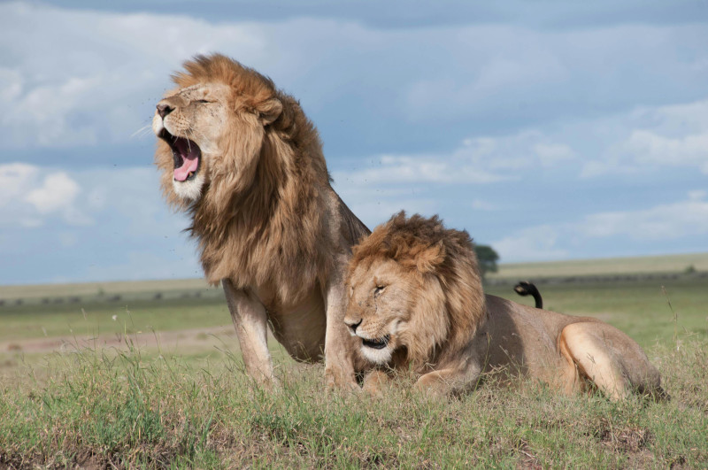
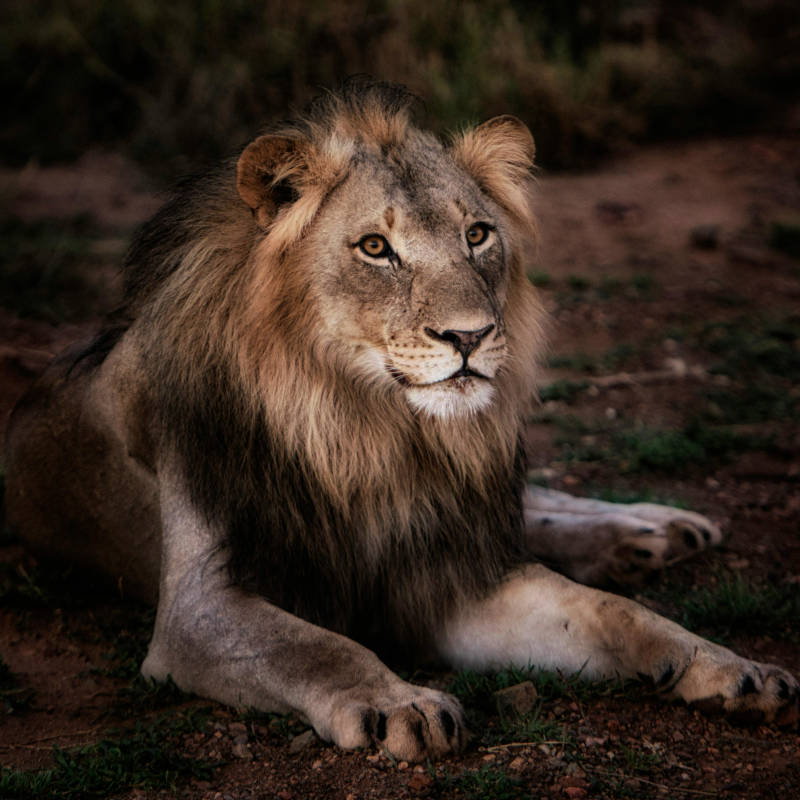

Leões


algumas curiosidades sobre os leões
- Os leões são conhecidos como "reis da selva", mas vivem em savanas e pastagens.
- O rugido de um leão pode ser ouvido a até 8 km de distância.
- Leões vivem em bandos liderados por machos e compostos por várias fêmeas e seus filhotes.
- As fêmeas são as principais responsáveis pela caça no bando.
- A juba de um leão macho indica saúde e dominância; quanto mais escura, mais atraente.
- Na cultura egípcia, a deusa Sekhmet, com cabeça de leão, representava poder e proteção.